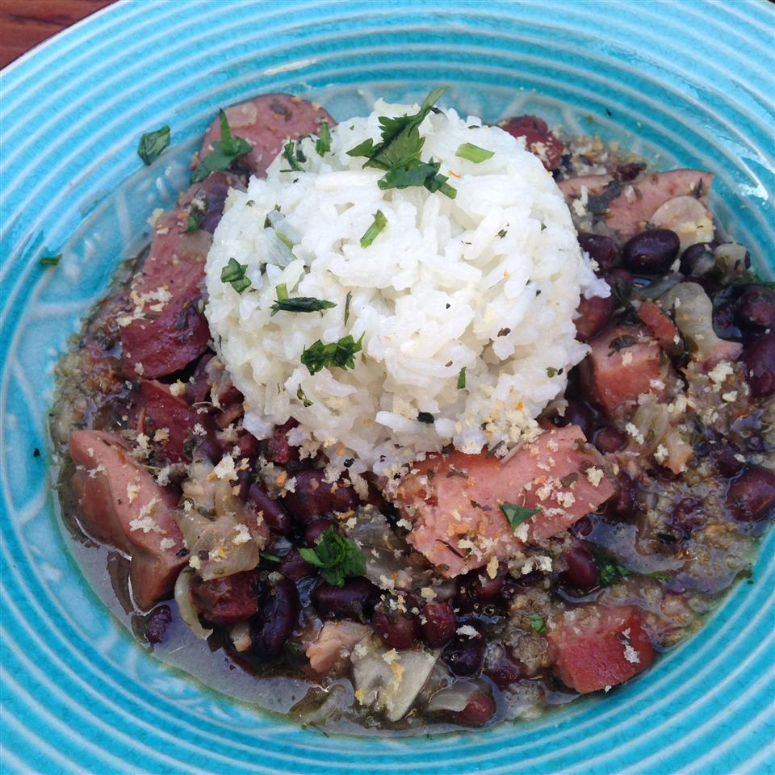

Odin Recipes

Ingredients
-
1 pound dry black beans
- 2 quarts water, plus more as needed
- 3 ounces dried beef, chopped
- 1 bay leaf
- 2 smoked pork chops, cut into large chunks, bones reserved
- 4 ounces bacon, coarsely chopped
- 12 ounces linguica sausage, cut into large chunks
- 2 (4 ounce) links Italian sausage
- 1 onion, chopped
- 6 cloves garlic, minced
- 1 teaspoon ground cumin
- ½ teaspoon ground coriander
- 1 pinch cayenne pepper, or to taste
- salt and ground black pepper to taste
- 1 tablespoon chopped Italian parsley
- For the crumbs:
- 1 tablespoon olive oil
Fejoida Recipe